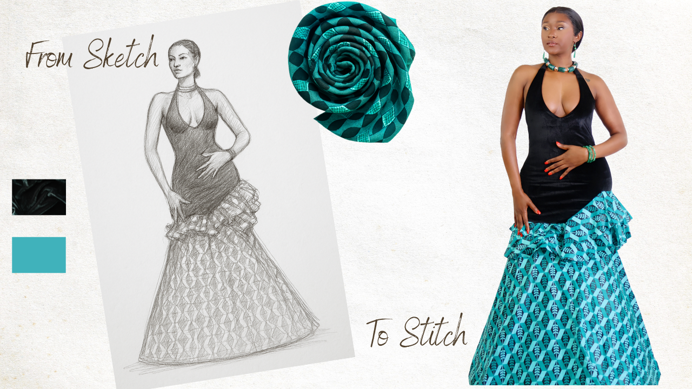
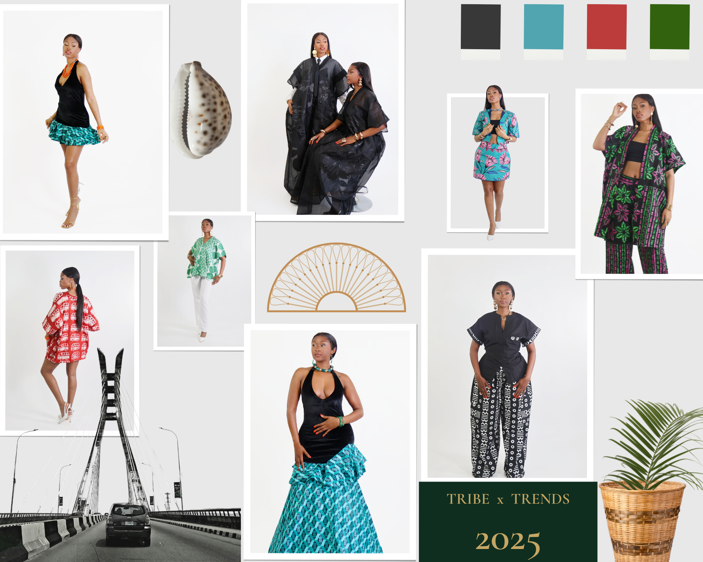
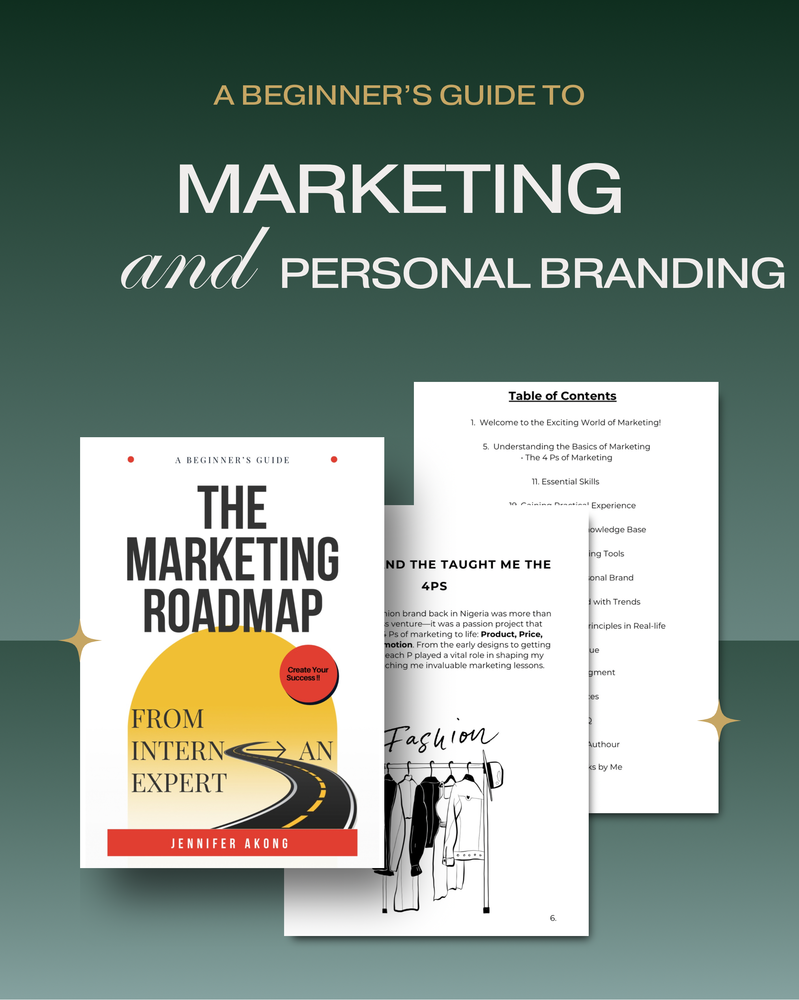

My Digital Project Portfolio
This is the other side of my creativity — strategy, structure, and digital transformation. Alongside fashion, I’ve worked on digital campaigns, websites, and training programmes that empower communities and elevate stories.
MANIA by Jennifer – E-commerce Fashion Brand Launch
Role: Project Lead & Creative Director
Tools: Shopify, Canva, Meta Suite, Mailchimp
Designed and launched the full e-commerce platform for MANIA by Jennifer. Oversaw branding, product photography, digital campaigns, and influencer outreach. Built the brand website and handled Shopify integrations.
A Thousand Women – Digital Literacy & Campaign Series
Role: Digital Skills & Outreach Project Coordinator
Tools: Trello, WordPress, Mailchimp, Canva, Google Analytics
Led multiple digital campaigns for World Health Day, Education Day, and Period Poverty Awareness. Delivered community training to improve digital confidence and built reusable toolkits for outreach teams. Tracked performance and user engagement using UTM codes and dashboards.
Personal Portfolio Website – GitHub Hosted Build
Role: Developer & Designer
Tools: GitHub Pages, HTML/CSS, Bootstrap, Formspree, APIs
Built my own portfolio using GitHub Pages. Structured and styled the layout using Bootstrap and Playfair Display. Integrated contact forms and future-ready blog features to showcase my projects and brand identity.
Core Digital Skills & Tools
- Project & Campaign Management (PRINCE2 Foundation)
- Agile Planning with Trello, Notion, and Asana
- CMS (WordPress), SEO & Content Upload
- HTML, CSS, GitHub, APIs, and light coding
- Canva, Adobe Express, Mailchimp, Google Analytics
Certifications
- PRINCE2® Foundation – Axelos
- Google Project Management Certificate – Coursera
- Google Digital Marketing Certificate – Coursera
- LinkedIn Marketing Strategy, Creative Design & Insights
A voice for Africa. A builder of futures. A force of nature.
Fashion Journey
I come from a family of tailors. My aunt was a local champion, she made clothes for everyone in our community, from the chiefs and their wives to the children eagerly waiting on Christmas Eve. Watching her work, season after season, stirred something in me. That joy on people’s faces as they received their festive outfits,that was where my love for fashion was born.
At 14, I got my first sewing machine. I started stitching for myself and my siblings, and then for friends and neighbours. Soon after, I began modelling and met designers who opened my eyes to the global fashion scene. From that point on, the vision was clear.

For over a decade, I’ve had the honour of designing for royalty, brides, celebrities, and everyday icons. I’ve poured my heritage into every piece, crafting fashion that celebrates culture with confidence. This journey isn’t just mine,it’s about elevating African fashion and telling our stories through every stitch. I believe Africa deserves to be seen, celebrated, and represented in global spaces,and fashion is my loudest language.

What I Believe
I believe in fashion that speaks,fashion that remembers where it came from and dreams of where it’s going. I believe in building brands that feel as good as they look, creating work that reflects both purpose and pride.
To me, creativity is more than aesthetics. It’s how we show up, how we solve problems, how we express identity and inspire others. That’s the kind of energy I bring to everything I create, from garments to campaigns.
{kind=link}
My Debut & Evolution
In 2014, I took a bold step from the runway to the design studio, launching my first collection in Calabar. It was humbling to be featured in FotoFashion9ja, highlighting my transition as a runway model breaking into design. That debut set the tone for what would become a decade-long journey of bold choices and cultural storytelling through fashion.
{kind=link}
Today, MANIA by Jennifer is a proudly Afro-fusion fashion brand, inspired by the French word manière, meaning "a way." It represents not just how we dress, but how we live, with expression, heritage, and edge. Our collections like Tribe x Trends reflect this ethos, combining bold West African fabrics with modern cuts for people who walk through life like it's a runway.
Headquartered in Manchester, UK, and rooted deeply in Nigeria, our brand exists across two continents. Our mission is to create timeless pieces that speak across cultures,making heritage wearable, and style unforgettable.
{kind=link}
My Book
The Marketing Roadmap: From Intern to an Expert shares the exact lessons, strategies, and stories that helped me grow from a marketing intern to a confident, results-driven professional.
It’s more than a guide, it’s a toolkit for ambitious creatives, professionals, and entrepreneurs ready to build their brand, grow their skills, and make their mark in the digital space.
Whether you're just starting out or levelling up, this book is your step-by-step manual to thriving in modern marketing, with real insight and zero fluff.
Get the Book {kind=link}